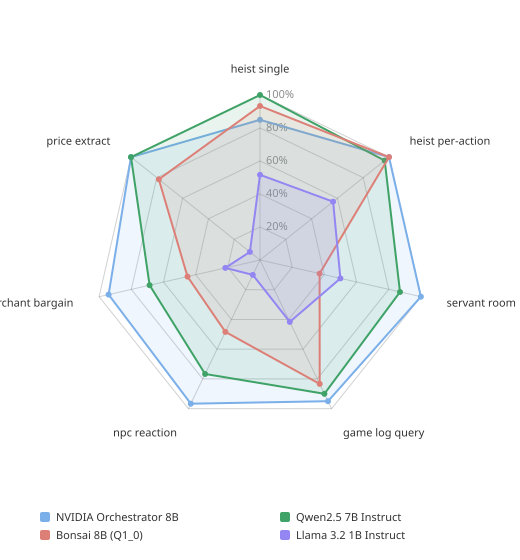

Compare Tool-Call Models¶
Pick a catalog model for a ToolCall node using measured exact accuracy, not
parameter count. Two models with the same overall score can be strong and weak
in opposite places — the tables below are for choosing by job, not for
crowning a winner.
Everything here is greedy decoding (temperature 0, seed 42) on the shipped tool-call catalog. Temperature 0.3 and 0.7 move the field by about a point; use greedy numbers unless you already know you will sample hotter in game.
How a case is scored
Exact accuracy: the call matches the expected tool name and every argument, or the model correctly calls nothing. No partial credit, no judge model. Constrained decoding holds the syntax; these numbers are about which tool and which arguments.
Which table to read¶
| Your tools look like… | Read |
|---|---|
| Game commands, NPC actuation, log queries, trading | Tryll-authored suites |
| Generic APIs, several tools at once, "don't call anything" | BFCL slice |
The two corpora do not rank models the same way. NVIDIA Orchestrator 8B leads the authored suites and sits in a pack on BFCL. Llama 3.1 8B is usable on authored command parsing and collapses on BFCL parallel cases. Read the corpus that matches the shape of your tools.
Catalog models whose tool_call_support is unsupported are not in these
tables. That catalog label is advisory, not the check: CreateAgent inspects
the model's chat template and rejects a ToolCall node with
3003 GraphCompilationFailed when
the template does not render tool definitions. See
Not every model can call tools.
Tryll-authored suites¶
Seven game-shaped suites, 132 cases per model. Twenty catalog models;
Mistral 7B did not complete this corpus (a constrained-decoding abort on one
suite). Run authored_sweep_20260821_0300.
| Model | Exact accuracy |
|---|---|
| Ministral 3 14B Instruct (Q4_K_M) | 96.2% |
| NVIDIA Orchestrator 8B (Q4_K_M) | 96.2% |
| QVikhr 3 4B Instruction (Q4_K_M) | 93.9% |
| Bonsai 27B (Q1_0 1-bit) | 93.2% |
| Ministral 3 3B Instruct (Q4_K_M) | 91.7% |
| Ministral 3 8B Instruct (Q4_K_M) | 91.7% |
| Granite 4.0 H-Micro Instruct (Q4_K_M) | 90.9% |
| Qwen2.5 7B Instruct (Q4_K_M) | 88.6% |
| Bonsai 8B (Q2_0 2-bit) | 87.1% |
| NVIDIA Nemotron 3 Nano 4B (Q4_K_M) | 87.1% |
| Qwen 3.5 4B (Q4_K_M) | 84.1% |
| Gemma 4 E4B Instruct (Q4_K_M) | 81.1% |
| Qwen2.5 3B Instruct (Q4_K_M) | 81.1% |
| Granite 4.0 H-Tiny Instruct (Q4_K_M) | 80.3% |
| Llama 3.1 8B Instruct (Q4_K_M) | 78.0% |
| Qwen 3.5 2B (Q4_K_M) | 76.5% |
| Bonsai 8B (Q1_0 1-bit) | 72.7% |
| Llama 3.2 3B Instruct (Q4_K_M) | 50.8% |
| Qwen2.5 0.5B Instruct (Q4_K_M) | 50.8% |
| Llama 3.2 1B Instruct (Q4_K_M) | 36.4% |
Shape matters more than the average¶
Pass rate per suite, pooled across three temperatures, for four models chosen because their profiles differ. Outer ring is 100%.

Bonsai 8B (Q1_0) is the argument for not shipping on the headline number
alone. It is near-perfect on both command-parsing suites and near the floor on
servant_room and merchant_bargain. Given a radio command it is a top-tier
model; given a conversation to read it is not.
Pick a job, then a model¶
If you already know the kind of tool you are shipping, read that column, not the average. Figures are greedy, cases passed / cases in the suite.
| Model | Commands (20) | Game log (20) | NPC reaction (20) |
|---|---|---|---|
| NVIDIA Orchestrator 8B | 20 / 20 | 19 / 20 | 20 / 20 |
| Ministral 3 14B | 20 / 20 | 19 / 20 | 19 / 20 |
| Qwen 3.5 4B | 18 / 20 | 19 / 20 | 16 / 20 |
| Qwen2.5 7B | 19 / 20 | 18 / 20 | 16 / 20 |
| Bonsai 8B (Q1_0) | 20 / 20 | 18 / 20 | 9 / 20 |
| Llama 3.1 8B | 17 / 20 | 12 / 20 | 14 / 20 |
| Llama 3.2 1B | 14 / 20 | 7 / 20 | 2 / 20 |
- Commands is
heist_command_per_action— several tools with different parameter shapes, player speech mapped onto a fixed vocabulary. - Game log is
game_log_query— two tools, four filters, the player never names every slot. The hardest authored suite, and the closest to a companion that looks things up. - NPC reaction is
npc_reaction— zero-argument tools. Nothing is scored except the decision (attack, trade, follow, leave, or stay quiet). This is the floor of the authored corpus.
A worked example: you want a companion that answers "where did I last see the orc?" by calling a query tool. Read Game log, not the overall column. Orchestrator, Ministral 14B, and Qwen 3.5 4B are 19 / 20 there; Llama 3.1 8B is 12 / 20 even though it is an 8B model.
For the schema and prompt shape that suite uses, see Design a tool-call prompt.
BFCL slice¶
300 generic single-turn cases from BFCL v4 (simple, multiple, parallel,
irrelevance). All 21 catalog tool-call models, including Mistral 7B.
Run bfcl_sweep_20260826_1204.
| Model | Exact accuracy |
|---|---|
| QVikhr 3 4B Instruction (Q4_K_M) | 85.3% |
| Bonsai 8B (Q2_0 2-bit) | 85.0% |
| Ministral 3 8B Instruct (Q4_K_M) | 85.0% |
| NVIDIA Orchestrator 8B (Q4_K_M) | 85.0% |
| Bonsai 8B (Q1_0 1-bit) | 84.7% |
| Qwen 3.5 4B (Q4_K_M) | 84.3% |
| Granite 4.0 H-Micro Instruct (Q4_K_M) | 84.0% |
| Ministral 3 3B Instruct (Q4_K_M) | 84.0% |
| Granite 4.0 H-Tiny Instruct (Q4_K_M) | 83.3% |
| Ministral 3 14B Instruct (Q4_K_M) | 83.3% |
| NVIDIA Nemotron 3 Nano 4B (Q4_K_M) | 82.3% |
| Gemma 4 E4B Instruct (Q4_K_M) | 80.0% |
| Qwen2.5 7B Instruct (Q4_K_M) | 79.3% |
| Qwen2.5 3B Instruct (Q4_K_M) | 77.3% |
| Qwen 3.5 2B (Q4_K_M) | 72.7% |
| Bonsai 27B (Q1_0 1-bit) | 69.0% |
| Mistral 7B Instruct (Q4_K_M) | 62.0% |
| Qwen2.5 0.5B Instruct (Q4_K_M) | 53.7% |
| Llama 3.1 8B Instruct (Q4_K_M) | 46.3% |
| Llama 3.2 3B Instruct (Q4_K_M) | 29.3% |
| Llama 3.2 1B Instruct (Q4_K_M) | 10.0% |
Eleven models sit between 82% and 85%. Below that the field drops off, and parallel is what does it: one utterance that should produce several calls. Llama 3.1 8B, Llama 3.2 3B, and Llama 3.2 1B score 0 / 54 parallel cases. Bonsai 27B is 10 / 54 there, which is why a 27B model ranks sixteenth on this corpus and near the top of the authored one.
If your game issues one tool per player line, BFCL parallel is the wrong
number to optimise for. If a single line must open every door, it is the
right one — and you need parallel_tool_calls = true on the node as well.
What these numbers do not tell you¶
- VRAM and RAM. An 8B Q4 and a 27B 1-bit are different machines. See Estimate memory footprint.
- Whether the template can render tools at all. That is a fail-fast at
CreateAgent, not a score. - Multi-turn tool use. Both corpora are single-turn.
- Your prompt and your schema. A model that scores 19 / 20 on the game-log suite still fails if your own tool has five required filters and no name for "unfiltered". Shape the schema first — Design a tool-call prompt.